Lecture 10: Trees, Forests, & Connectivity#
Warmup#
Answer
Again, some intuition that might be helpful is that removing vertices often does more work than removing edges. For example, if no edges share vertices in a graph with \(\epsilon(G)=k\), we have something like:

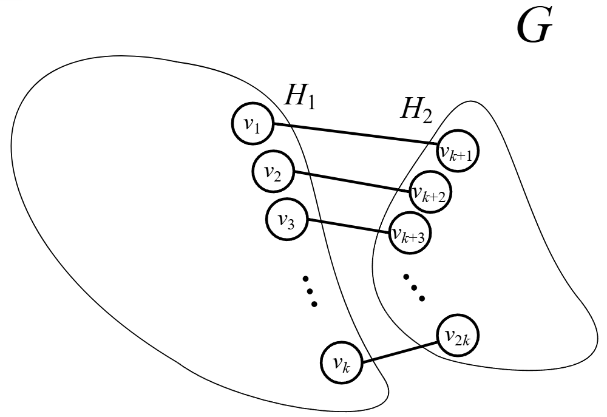
If exactly two edges share a vertex, we have something like:

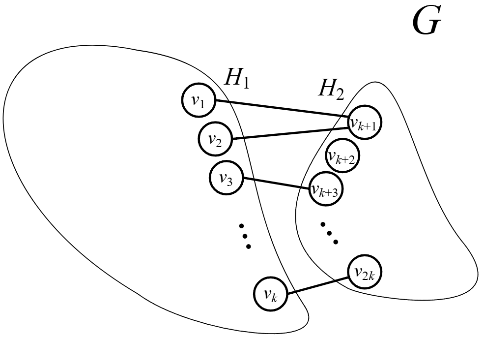
In any case, we know that if we carefully remove \(k\) vertices, we’ll end up removing the \(k\) edges. This leads to the proof of the statement:
“Recall that \(\epsilon(G)=0\) if and only if \(\kappa(G)=0\). So, we know this holds for that case. Assume then that \(\epsilon(G)>0\).
Let \(S\subseteq E\) be a set of edges such that \(G-S\) is disconnected and \(|S|=\epsilon(G)\). Note that since removing an endpoint also removes the edge, there exists \(T\subseteq V\) such that \(|T|=|S|\) and removing the vertices in \(T\) disconnects \(G\) as well.
Either \(T\) is the minimum size (and so \(|T|=\kappa(G)\)) or its not (and so \(|T|>\kappa(G)\)).
So, \(\kappa(G)\leq |T|=|S|=\epsilon(G)\).”
Two lectures ago, we proved that \(\epsilon(G)\leq \delta(G)\). So, we also know the following:
Corollary 3
For a graph \(G\), \(\kappa(G)\leq \epsilon(G)\leq \delta(G)\).
Consider, for example, the following graph:

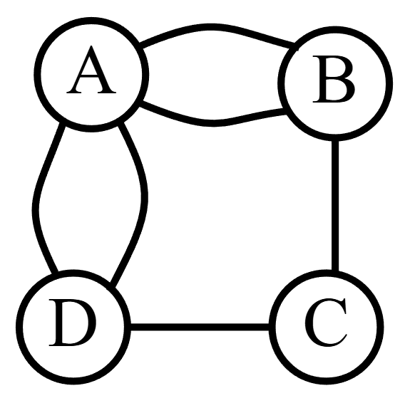
\(C\) above has the least amount of edges, so \(\delta(G)=2\). Likewise, the least amount of edges to disconnect the graph are 2 (remove \(C\)’s edges). So, \(\epsilon(G)=2\). Lastly, well… removing any single vertex leaves the graph connected. But, removing either \(A\) and \(C\) or \(B\) and \(D\) creates a disconnected graph. So, \(\kappa(G)=2\).
If we make a small perturbation to the above graph, we end up with the following graph:

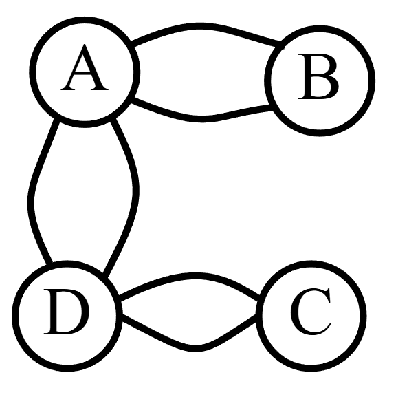
You can verify for yourself that this small perturbation results in a graph with \(\delta(G)=2\) and \(\epsilon(G)=2\) but \(\kappa(G)=2\).
Trees & Forests#
Consider the following graph, \(G\):

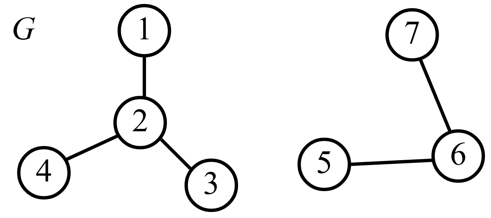
While this graph is not connected, there are parts of the graph that are connected. As graph theorists, this might be important to note.
Definition 31 (Connected Components/Components)
An induced subgraph \(H\subseteq G\) is a connected component or component of \(G\) if:
\(H\) is connected
Considering more vertices of \(G\) into \(H\) will result in a disconnected graph.
Put simply, a component of \(G\) is a connected piece of \(G\) that isn’t part of a larger connected piece of \(G\).
For example, the graph \(G\) above has a connected piece:

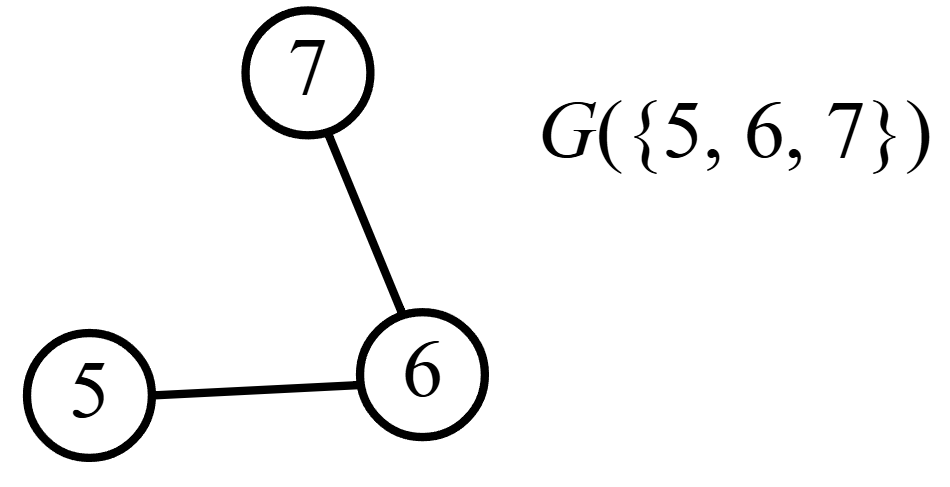
If we consider more vertices of \(G\), we end up with a disconnected graph:

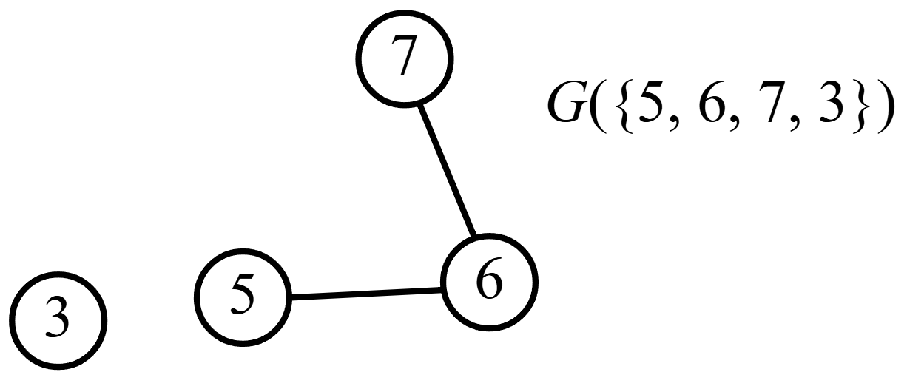
These two properties make \(G(\{5,6,7\})\) a component.
Definition 32 (Tree)
A connected graph with no cycles is called a tree
Luckily, these lectures are thought through. So, \(G\) above has some trees in it. For example:

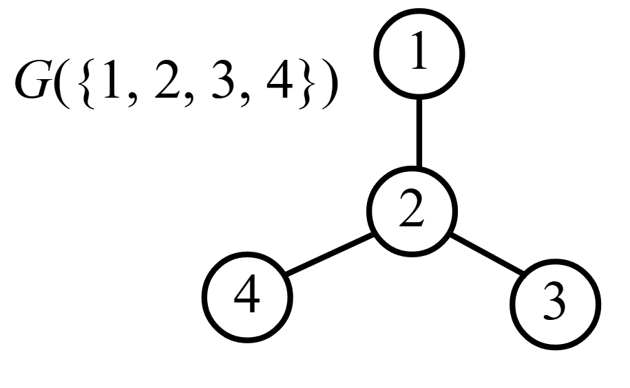
Note that \(G(\{1,2,3,4\})\) is connected and has no cycles. This makes \(G(\{1,2,3,4\})\) a tree!
If we add an edge to the graph, we end up with a cycle:

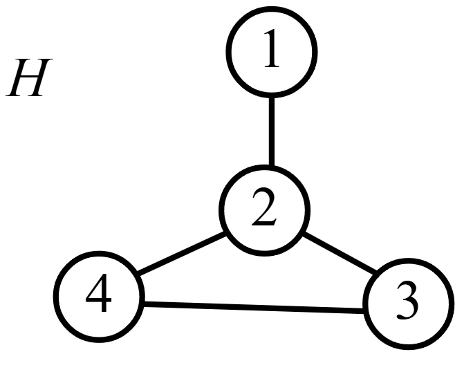
Note that \(H\) is connected. But, since there is a cycle on the vertices 2, 3, and 4 on \(H\), we cannot call \(H\) a tree.
Definition 33 (Forest)
A forest is a graph whose components are trees.
While a tree is technically a forest with 1 component, we typically say forest when there are more than 2 components. A good example of a forest is \(G\) from above!
Definition 34 (Spanning Subgraph)
A subgraph \(H=(W,F)\) of \(G=(V,E)\) is a spanning subgraph if \(W=V\).
Definition 35 (Spanning Tree)
A spanning tree is a spanning subgraph who is also a tree.
Answer
Here is one:

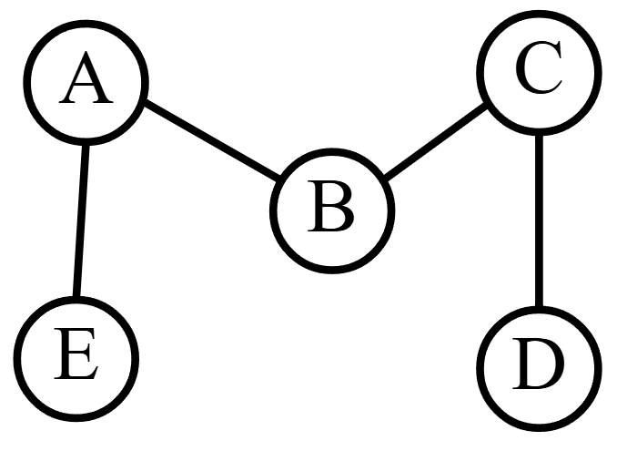
Another:

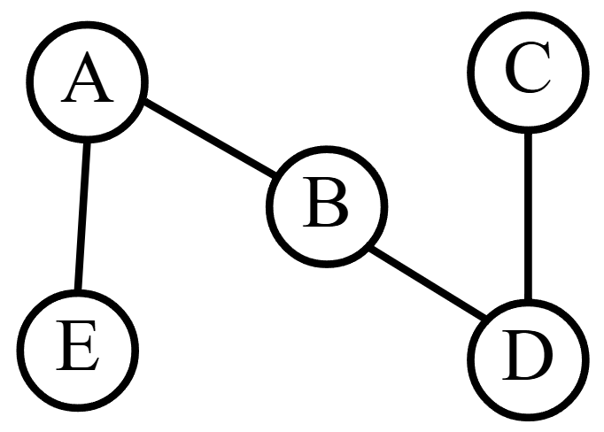
Another:

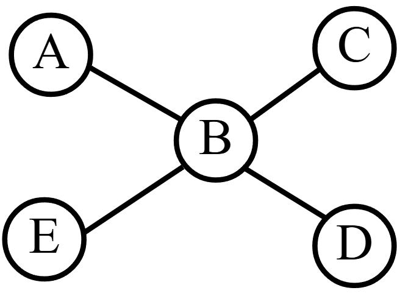
You might think about what it means if a graph has lots of spanning trees versus few spanning trees.